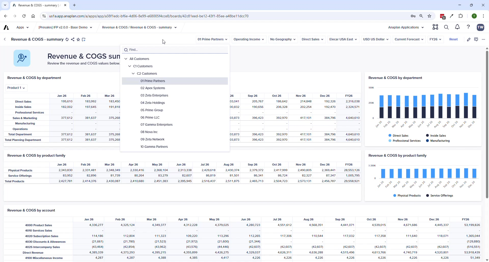
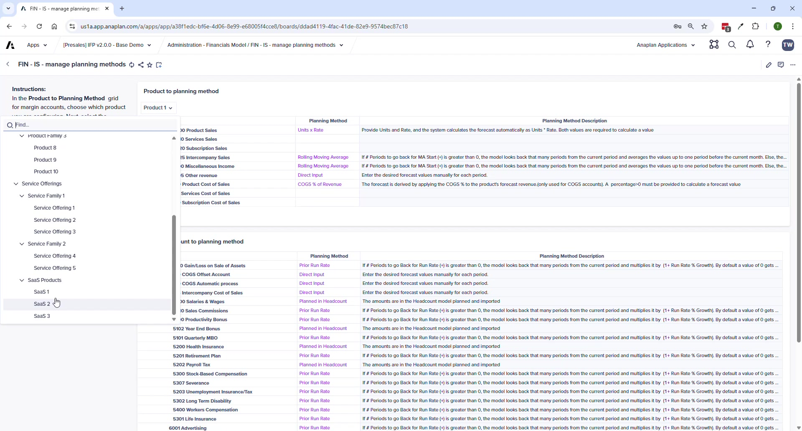
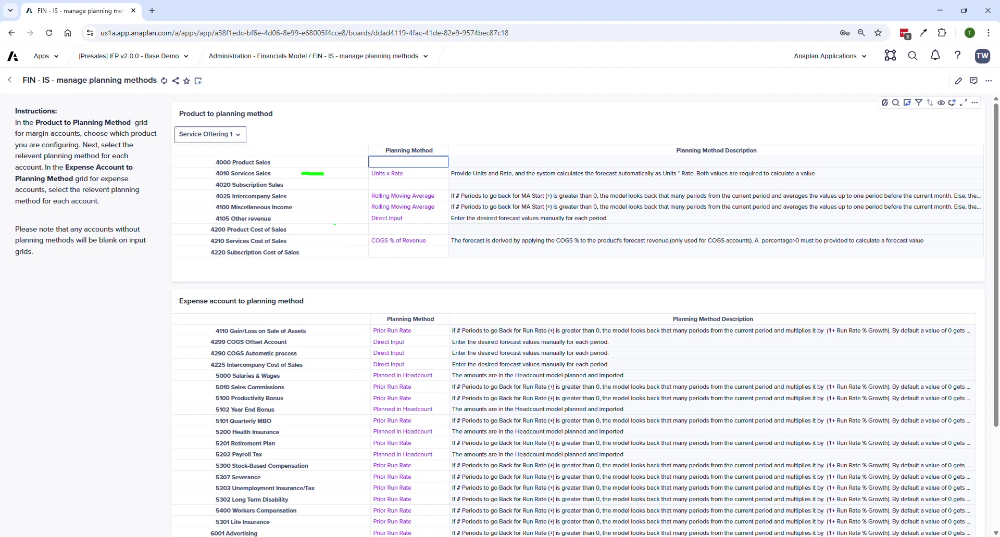
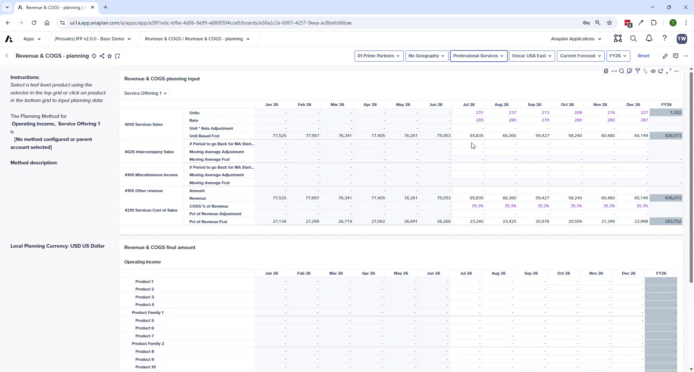

Revenue & COGS Planning
Planning methods by product type, UX experience, and integration with Balance Sheet
Module 3Module Walkthrough20 min
Key Capabilities
- Configurable per account AND per product — each product can use a different planning method for revenue and COGS
- Progressive Disclosure UX — shows only the inputs required for the selected method
- Context-sensitive help — selecting an account shows instructions and description on the left panel
- Any account without a method assigned will NOT appear on the planning page
Common Product Planning Setups
| Product Type | Accounts Used | Typical Method | Inputs |
|---|---|---|---|
| Physical Products | Product Sales + COGS | Units x Rate | Units sold + price per unit |
| Services / Consulting | Services Sales + Services COGS | Units x Rate | Hours x rate per hour |
| SaaS / Subscription | Subscription Sales + Sub COGS | Units x Rate | Subscriptions x rate per subscription |




Available Planning Methods
| Method | Description | Best For |
|---|---|---|
| Units x Rate | Revenue = Units × Rate | Physical products, services (hours × rate), subscriptions |
| Direct Input | Enter amounts manually | Simple or non-driver-based accounts |
| Prior Run Rate | Prior period × (1 + growth %) | Stable recurring revenue |
| Rolling Moving Average | Average of prior N periods | Smoothed trend forecasting |
| COGS % of Revenue | COGS = Revenue × user-defined % | Margin-driven COGS accounts |
⚠ Department Selector Matters
If you select a product but see no data, check your department selector. Service revenue may only appear under Professional Services, not Sales. This is expected behavior — not a bug.
Process Pages
| Page | Purpose |
|---|---|
| Revenue & COGS Planning | Main planning input — dynamic grid per product + planning method |
| Revenue & COGS Summary | Overview by dept/profit center, product family, and account |
ℹ V2.0 Change
End-user import templates for loading Revenue/COGS to specific GL accounts have been removed in v2.0. Customers requiring GL-level imports need an extension.